The Japanese cherry blossom (Prunus serrulata) is a species of cherry tree that grows naturally in Japan, China, and Korea. It is used as an ornamental for its spring flowering. Here you can see some examples:
 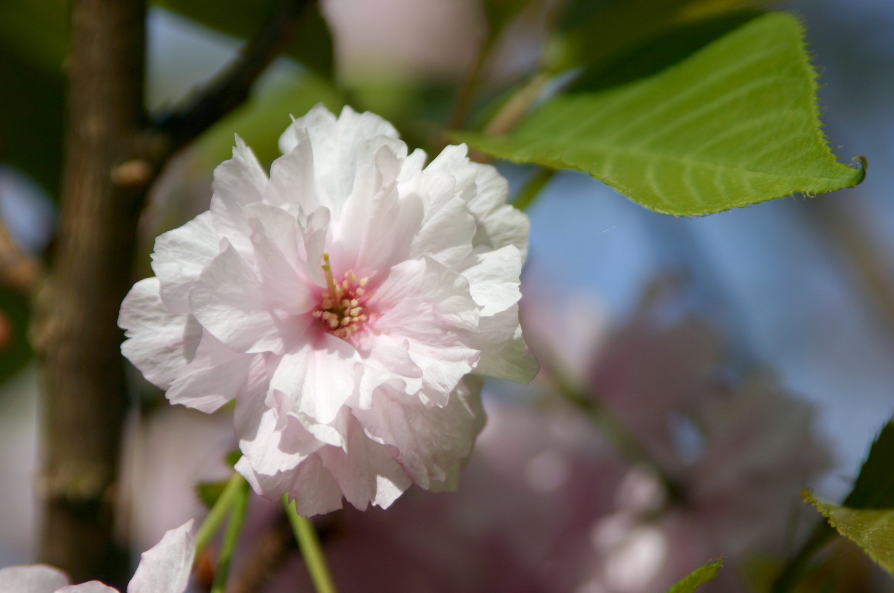
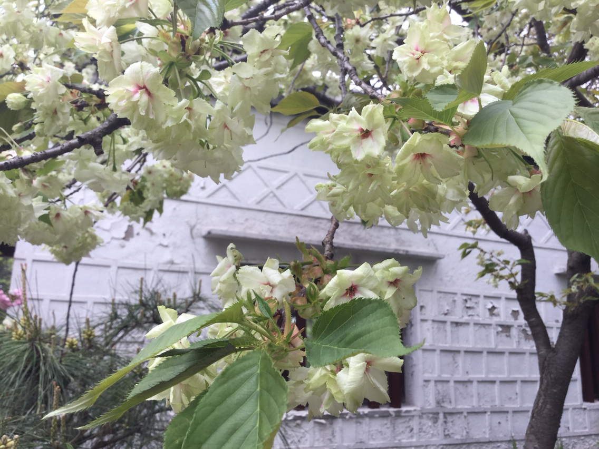
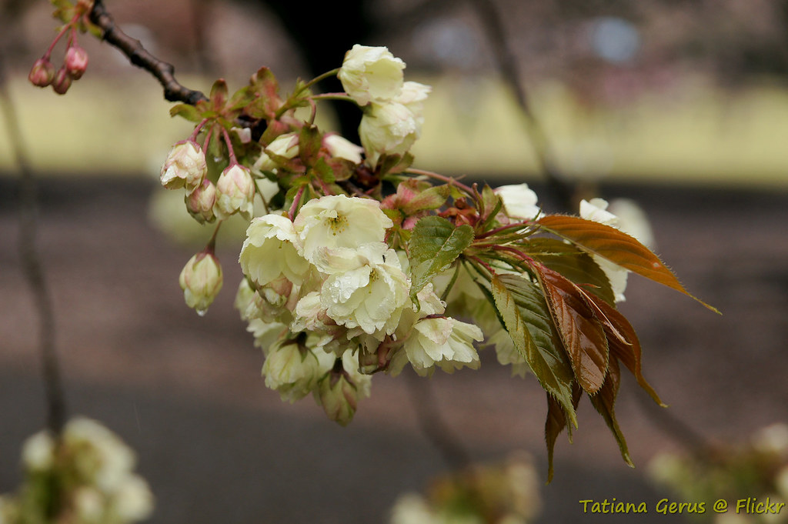
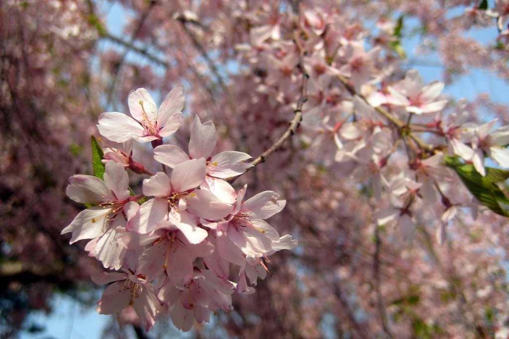
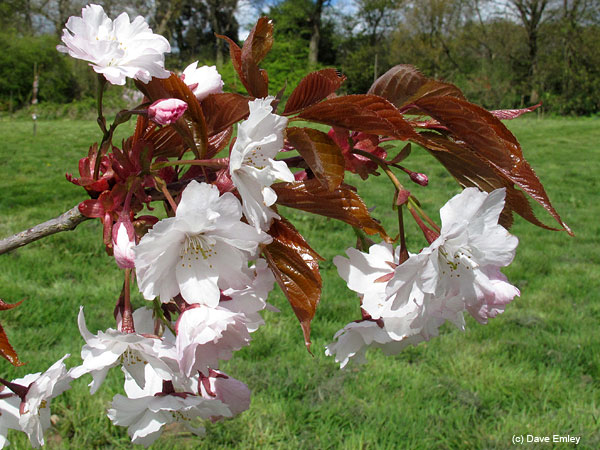
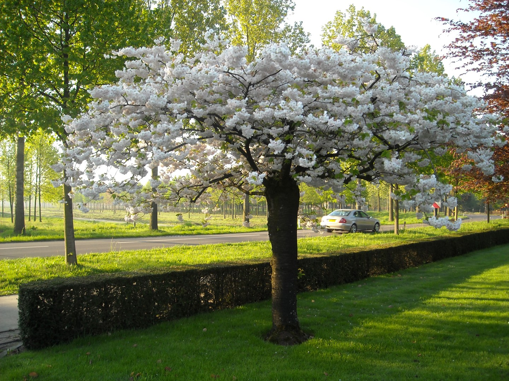
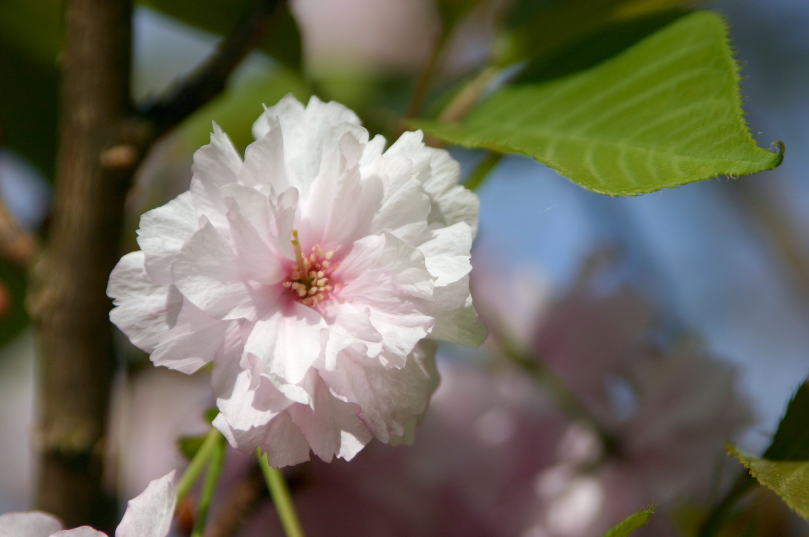
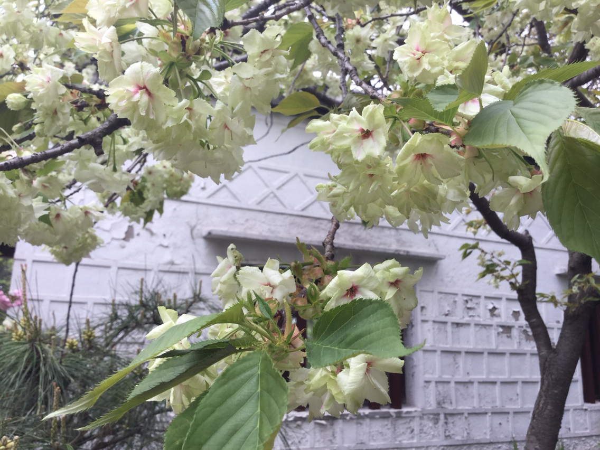
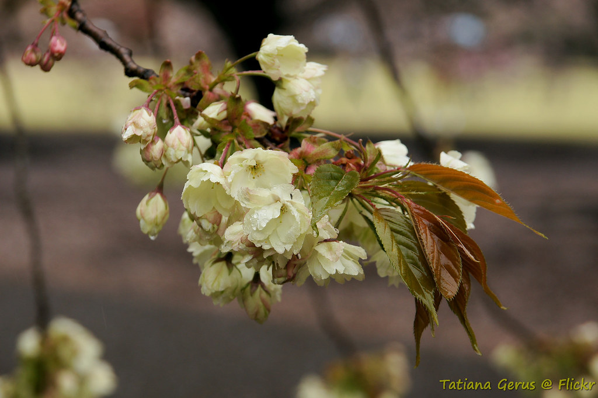
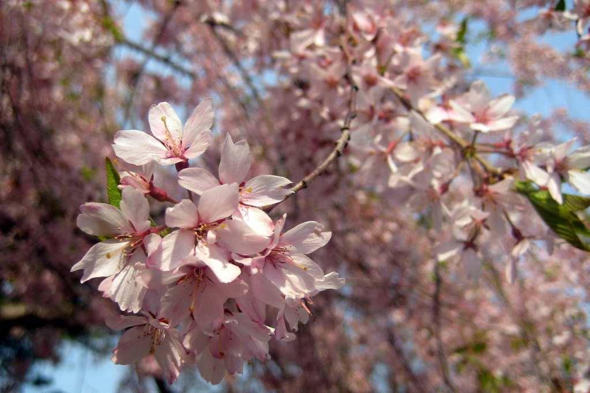
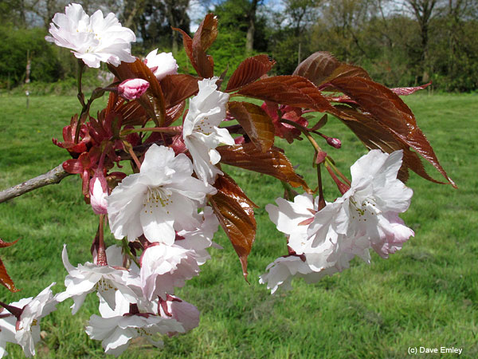
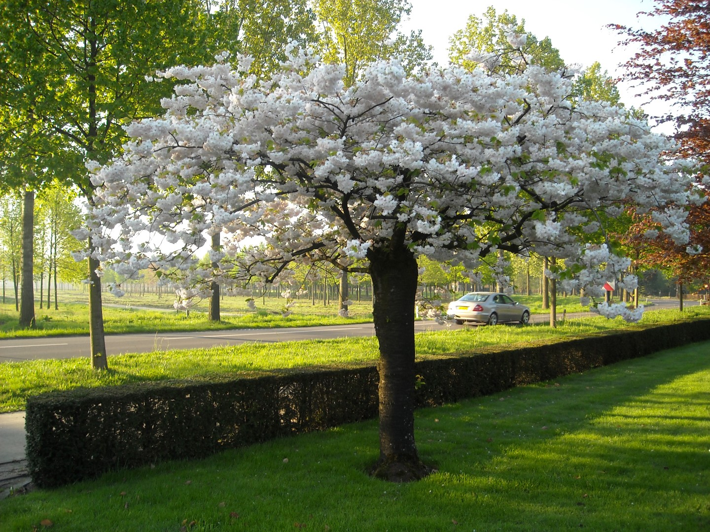
 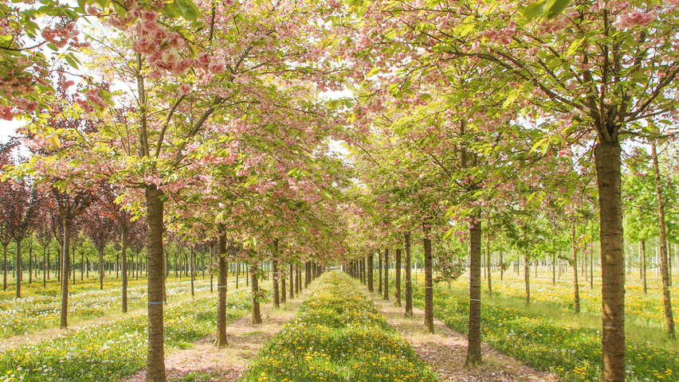
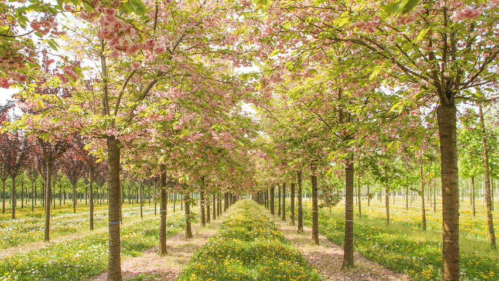